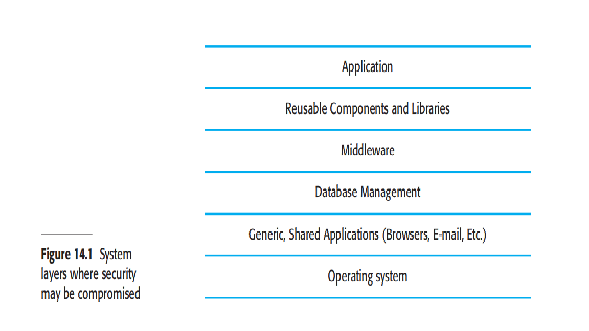

Introduction
The widespread use of the Internet in the 1990s introduced a new challenge for software engineers—designing and implementing systems that were secure. As more and more systems were connected to the Internet, a variety of different external attacks were devised to threaten these systems. The problems of producing dependable systems were hugely increased. Systems engineers had to consider threats from malicious and technically skilled attackers as well as problems resulting from accidental mistakes in the development process.
It is now essential to design systems to withstand external attacks and to recover from such attacks. Without security precautions, it is almost inevitable that attackers will compromise a networked system. They may misuse the system hardware, steal confidential data, or disrupt the services offered by the system. System security engineering is therefore an increasingly important aspect of the systems engineering process.
Security engineering is concerned with the development and evolution of systems that can resist malicious attacks, which are intended to damage the system or its data. Software security engineering is part of the more general field of computer security. This has become a priority for businesses and individuals as more and more criminals try to exploit networked systems for illegal purposes. Software engineers should be aware of the security threats faced by systems and ways in which these threats can be neutralized.
My intention in this chapter is to introduce security engineering to software engineers, with a focus on design issues that affect application security. The chapter is not about computer security as a whole and so doesn't cover topics such as encryption, access control, authorization mechanisms, viruses and Trojan horses, etc. These are described in detail in general texts on computer security.
This chapter adds to the discussion of security elsewhere in the book. You should read the material here along with:
- Section 10.1, where I explain how security and dependability are closely related;
- Section 10.4, where I introduce security terminology;
- Section 12.1, where I introduce the general notion of risk-driven specification;
- Section 12.4, where I discuss general issues of security requirements specification;
- Section 15.3, where I explain a number of approaches to security testing.
When you consider security issues, you have to consider both the application software (the control system, the information system, etc.) and the infrastructure on which this system is built. The infrastructure for complex applications may include:
- an operating system platform, such as Linux or Windows;
- other generic applications that run on that system, such as web browsers and e-mail clients;
- a database management system;

- middleware that supports distributed computing and database access;
- libraries of reusable components that are used by the application software.
The majority of external attacks focus on system infrastructures because infrastructure components (e.g., web browsers) are well known and widely available. Attackers can probe these systems for weaknesses and share information about vulnerabilities that they have discovered. As many people use the same software, attacks have wide applicability. Infrastructure vulnerabilities may lead to attackers gaining unauthorized access to an application system and its data.
In practice, there is an important distinction between application security and infrastructure security:
- Application security is a software engineering problem where software engineers should ensure that the system is designed to resist attacks.
- Infrastructure security is a management problem where system managers configure the infrastructure to resist attacks. System managers have to set up the infrastructure to make the most effective use of whatever infrastructure security features are available. They also have to repair infrastructure security vulnerabilities that come to light as the software is used.
System security management is not a single task but includes a range of activities such as user and permission management, system software deployment and maintenance, and attack monitoring, detection and recovery:
- User and permission management includes adding and removing users from the system, ensuring that appropriate user authentication mechanisms are in place and setting up the permissions in the system so that users only have access to the resources that they need.
- System software deployment and maintenance includes installing system software and middleware and configuring these properly so that security vulnerabilities are avoided. It also involves updating this software regularly with new versions or patches, which repair security problems that have been discovered.
- Attack monitoring, detection and recovery includes activities which monitor the system for unauthorized access, detect, and put in place strategies for resisting attacks, and backup activities so that normal operation can be resumed after an external attack.
Application security engineering is about designing secure systems while considering budget and usability. It includes designing systems to prevent security management errors. For critical or embedded systems, a holistic approach is taken, where the application and its underlying infrastructure (like a real-time operating system) are chosen together to meet security requirements. In contrast, applications within a typical organization usually must adapt to the existing infrastructure, so designers must factor in the risks and security features of that pre-existing infrastructure.
14.1 Security risk management
Security risk management balances the potential financial losses from attacks against the costs of implementing security measures. This is a business decision, not a technical one, meaning senior management is responsible for accepting security costs or the risks of not having them. Software engineers are vital participants, providing technical guidance to inform these decisions. The organizational security policy is a key input to this process, as it defines what is and isn't allowed, helping to identify potential threats. Risk assessment is an ongoing process that begins before a system is acquired and continues throughout its entire lifecycle.
Risk assessment starts before the decision to acquire the system has been made and should continue throughout the system development process and after the system has gone into use. I also introduced, in Chapter 12, the idea that this risk assessment is a staged process:
- Preliminary Risk Assessment: This initial stage happens before detailed system design begins. The goal is to determine if an acceptable level of security is feasible at a reasonable cost. At this point, you don't have information about specific system vulnerabilities, but you can derive general security requirements.
- Life-cycle Risk Assessment: This assessment takes place during the system's development. It uses the technical design to identify and address known or potential vulnerabilities. The results can lead to changes in security requirements and influence how the system is implemented, tested, and deployed.
- Operational Risk Assessment: This ongoing assessment happens after a system has been deployed. It accounts for how the system is actually used and adapts to new requirements or changes in the organization. This stage ensures the security measures remain effective as the system evolves over time.
This section focuses on life-cycle and operational risk assessment, specifically using misuse cases to identify security threats. Misuse cases are scenarios of malicious interactions with a system, which can be used alongside regular use cases to determine a system's security requirements.
According to Pfleeger and Pfleeger (2007), threats can be categorized into four types, which can serve as a starting point for creating misuse cases:
- Interception: An attacker gains unauthorized access to an asset (e.g., someone accessing a celebrity's patient records).
- Interruption: An attacker makes part of the system unavailable (e.g., a denial of service attack on a database server).
- Modification: An attacker tampers with a system asset (e.g., changing information in a patient record).
- Fabrication: An attacker inserts false information into the system (e.g., adding fraudulent transactions to a banking system).
Misuse cases are valuable for all stages of risk assessment, providing a structured way to analyze potential attacks and their security implications during system design and evolution.

14.1.1 Life-cycle risk assessment
Preliminary risk assessment establishes a system's core security requirements. However, life-cycle risk assessment is a more detailed process that identifies specific design and implementation vulnerabilities. This stage refines existing requirements, generates new ones, and influences the overall system design. It is a continuous process that should be part of all development activities, from requirements to deployment.
A key difference from preliminary assessment is that life-cycle assessment uses more detailed information about data representation, distribution, and design decisions to provide additional protection. Two examples illustrate how this is done:
- A design decision to separate sensitive patient personal information from treatment information using a key. This allows the less sensitive data to be stored with less extensive protection, reducing the risk of an attacker linking treatment information to a specific individual if the key is secure.
- A design decision to copy patient records to a local client for offline access introduces a new risk: the theft of the laptop. To mitigate this, new controls, like encrypting the local records, must be implemented.
Furthermore, the choice of development technologies influences security. For example, building a system using an off-the-shelf product means you must accept its inherent design decisions, such as:
- Authentication is limited to a login/password combination.
- The architecture is client-server, with data accessed via a web browser.
- Users can edit information directly on a web form.

Even with generic design decisions, a life-cycle risk analysis can reveal vulnerabilities. Once identified, you must decide on steps to reduce these risks, which may involve adding new security requirements or changing operational procedures. Here are some examples of potential requirements to address these vulnerabilities:
- A separate daily password checker program should be used to find and report weak passwords to administrators, since this functionality cannot be built into an off-the-shelf system.
- Access should be restricted to approved and registered client computers only.
- All client computers should use a single, administrator-approved web browser to simplify security updates and management.
These requirements illustrate how security risk management leads to practical solutions for inherent system vulnerabilities.
14.1.2 Operational risk assessment
Security risk assessment should continue throughout the lifetime of the system to identify emerging risks and system changes that may be required to cope with these risks. This process is called operational risk assessment. New risks may emerge because of changing system requirements, changes in the system infrastructure, or changes in the environment in which the system is used.
The process of operational risk assessment is similar to the life-cycle risk assessment process, but with the addition of further information about the environment in which the system is used. The environment is important because characteristics of the environment can lead to new risks to the system. For example, say a system is being used in an environment in which users are frequently interrupted. A risk is that the interruption will mean that the user has to leave their computer unattended. It may then be possible for an unauthorized person to gain access to the information in the system. This could then generate a requirement for a password-protected screen saver to be run after a short period of inactivity.
14.2 Design for security
It is generally true that it is very difficult to add security to a system after it has been implemented. Therefore, you need to take security issues into account during the systems design process. In this section, I focus primarily on issues of system design, because this topic isn't given the attention it deserves in computer security books. Implementation issues and mistakes also have a major impact on security but these are often dependent on the specific technology used.
Here, I focus on a number of general, application-independent issues relevant to secure systems design:
- Architectural design—how do architectural design decisions affect the security of a system?
- Good practice—what is accepted good practice when designing secure systems?
- Design for deployment—what support should be designed into systems to avoid the introduction of vulnerabilities when a system is deployed for use?
Beyond the basics, security design must be tailored to an application's specific purpose, criticality, and environment. For example, a military system requires a different approach to data classification (like "secret" or "top secret") than a system handling personal data, which must adhere to data protection laws.
Security, Dependability, and Compromises
There's a strong link between security and dependability. Strategies used for dependability, such as redundancy and diversity, can also help a system resist and recover from attacks. Similarly, high-availability mechanisms can aid in recovering from denial-of-service (DoS) attacks.
Designing for security always involves compromises, especially between security, performance, and usability. Implementing strong security measures, such as encryption, can impact a system's performance by slowing down processes. There is also a tension with usability, as security features like multiple passwords can be inconvenient and lead to users being locked out. The ideal balance among these factors depends on the system's type and its operational environment. For instance, a military system's users are accustomed to rigorous security, whereas a stock trading system requires speed and would find frequent security checks unacceptable.
14.2.1 Architectural design
As I have discussed in Chapter 11, the choice of software architecture can have profound effects on the emergent properties of a system. If an inappropriate architecture is used, it may be very difficult to maintain the confidentiality and integrity of information in the system or to guarantee a required level of system availability. In designing a system architecture that maintains security, you need to consider two fundamental issues:
- Protection—how should the system be organized so that critical assets can be protected against external attack?
- Distribution—how should system assets be distributed so that the effects of a successful attack are minimized?
These issues are potentially conflicting. If you put all your assets in one place, then you can build layers of protection around them. As you only have to build a single protection system, you may be able to afford a strong system with several protection layers. However, if that protection fails, then all your assets are compromised. Adding several layers of protection also affects the usability of a system so it may mean that it is more difficult to meet system usability and performance requirements.
On the other hand, if you distribute assets, they are more expensive to protect because protection systems have to be implemented for each copy. Typically, then, you cannot afford as many protection layers. The chances are greater that the protection will be breached. However, if this happens, you don't suffer a total loss. It may be possible to duplicate and distribute information assets so that if one copy is corrupted or inaccessible, then the other copy can be used. However, if the information is confidential, keeping additional copies increases the risk that an intruder will gain access to this information.
For the patient record system, it is appropriate to use a centralized database architecture. To provide protection, you use a layered architecture with the critical protected assets at the lowest level in the system, with various layers of protection around them. Figure 14.4 illustrates this for the patient record system in which the critical assets to be protected are the records of individual patients.
In order to access and modify patient records, an attacker has to penetrate three system layers:
- Platform-level protection The top level controls access to the platform on which the patient record system runs. This usually involves a user signing on to a particular computer. The platform will also normally include support for maintaining the integrity of files on the system, backups, etc.
- Application-level protection The next protection level is built into the application itself. It involves a user accessing the application, being authenticated, and getting authorization to take actions such as viewing or modifying data. Application-specific integrity management support may be available.
- Record-level protection This level is invoked when access to specific records is required, and involves checking that a user is authorized to carry out the requested operations on that record. Protection at this level might also involve encryption to ensure that records cannot be browsed using a file browser. Integrity checking using, for example, cryptographic checksums, can detect changes that have been made outside the normal record update mechanisms.

The number of security layers depends on data criticality, but balancing security with usability is key, as multiple passwords can be irritating for users. A client-server architecture is effective for critical data, but a successful attack could lead to high recovery costs and make the system vulnerable to denial-of-service (DoS) attacks. For systems where DoS attacks are a major risk, a distributed object architecture is better. This approach spreads system assets across multiple platforms with individual protection mechanisms, allowing some services to remain operational even if one node is attacked. For instance, a distributed banking system can replicate critical data across nodes so that trading can continue even if a specific market's node goes down.
Finally, there's an inherent tension between security and performance. The architecture that best meets security requirements often conflicts with performance needs. For example, a layered security approach for a large database ensures confidentiality but adds communication overhead, which slows down data access. Designers must discuss these trade-offs with clients to find an acceptable balance.

14.2.2 Design guidelines
There are no universal rules for achieving system security, as the required measures depend on the system's type and the users' attitudes. For instance, bank employees will accept more stringent security procedures than university staff. However, some general guidelines can be widely applied to good security design practices. These guidelines are valuable for two main reasons:
-
They raise awareness of security issues: Software engineers often prioritize immediate goals like getting the software to work, which can cause them to overlook security. These guidelines help ensure that security is considered during critical design decisions.
-
They serve as a review checklist: The guidelines can be used in the system validation process to create specific questions that check how security has been engineered into the system.
The 10 design guidelines summarized in Figure 14.6 are derived from various sources and focus on the software specification and design phases. Other general principles like "Secure the weakest link" and "Keep it simple" are also important but are less directly tied to the engineering decisions discussed here.

Security Design Guidelines
While there are no universal rules for achieving security, these general guidelines provide a solid foundation for designing secure systems. They help software engineers consider security from the start and can be used as a checklist during system validation.
Guideline 1: Base security decisions on an explicit security policy
All security decisions should be guided by a high-level organizational security policy that defines what security means for the company. This policy should be a framework for design, not a list of specific mechanisms. If a formal policy doesn't exist, designers must work with management to create one from existing practices to ensure security decisions are consistent and approved.
Guideline 2: Avoid a single point of failure
Don't rely on just one security measure. Implement multiple, layered defenses, a practice known as "defense in depth." For instance, you can combine a password with a challenge/response system for user authentication. For data integrity, you might maintain an executable log of all changes and also create backup copies of data before any modifications are made.
Guideline 3: Fail securely
When a system fails, it should do so in a way that doesn't compromise security. The system's fallback procedures should be as secure as the system itself. For example, if a server fails and patient data is left on a local client, that data must be encrypted so that an unauthorized person cannot read it, ensuring a "fail-secure" state.
Guideline 4: Balance security and usability
Security measures often conflict with usability. While security requires checks and procedures (e.g., multiple passwords, restricted access), these can frustrate users, making the system difficult to use. If security measures are too cumbersome (e.g., hard-to-remember passwords), users may resort to insecure practices like writing them down. Designers must find a practical balance between security and user convenience.
Guideline 5: Log user actions
Always maintain a detailed log of user activities, recording who did what, when, and to which assets. This log can be used to recover from failures by replaying commands. It also acts as a deterrent against casual insider attacks and helps in tracing how an attacker gained access. However, technically skilled attackers might still be able to tamper with the log itself.
Guideline 6: Use redundancy and diversity to reduce risk
Implement redundancy by having more than one version of software or data. Use diversity by ensuring these versions are built on different platforms or technologies. This way, a vulnerability in one technology will not lead to a common failure across all versions. For example, using different operating systems on a server and a client prevents a single OS-based attack from compromising both.
Guideline 7: Validate all inputs
Never trust user input. All data submitted to the system should be carefully validated to prevent attacks like buffer overflows or "SQL poisoning," where unexpected input causes a system to crash or execute malicious code. You should define specific checks for all inputs, such as character limits and allowed characters, to ensure data is in the correct format before processing.
Guideline 8: Compartmentalize your assets
Organize system assets into separate compartments to limit the scope of an attack. Users should only have access to the information they absolutely need. This approach prevents an attacker who gains access to one user's credentials from compromising the entire system. While overrides might be necessary for emergencies, their usage must be logged to maintain accountability.
Guideline 9: Design for deployment
Design your system with its deployment environment in mind. Include features that simplify the setup process and automatically check for configuration errors. Many security problems arise from poor configuration during deployment, so a system designed to be easily and securely deployed reduces the risk of introducing vulnerabilities from the start.
Guideline 10: Design for recoverability
Always assume a security breach is possible and design your system to recover from one. This includes having backup authentication systems and clear procedures for restoring a secure state. For example, if a password system is compromised, you should have a mechanism to force all users to change their passwords in a secure way, such as using a pre-registered challenge/response system, to prevent the intruder from regaining access.

14.2.3 Design for deployment
The deployment of a system involves configuring the software to operate in an operational environment, installing the system on the computers in that environment, and then configuring the installed system for these computers (Figure 14.7). Configuration may be a simple process that involves setting some built-in parameters in the software to reflect user preferences. Sometimes, however, configuration is complex and requires the specific definition of business models and rules that affect the execution of the software.
It is at this stage of the software process that vulnerabilities in the software are often accidentally introduced. For example, during installation, software often has to be configured with a list of allowed users. When delivered, this list simply consists of a generic administrator login such as 'admin' and a default password, such as 'password'. This makes it easy for an administrator to set up the system. Their first action should be to introduce a new login name and password, and to delete the generic login name. However, it's easy to forget to do this. An attacker who knows of the default login may then be able to gain privileged access to the system. Configuration and deployment are often seen as system administration issues and so are considered to be outside the scope of software engineering processes.
Certainly, good management practice can avoid many security problems that arise from configuration and deployment mistakes. However, software designers have the responsibility to 'design for deployment'. You should always provide built-in support for deployment that will reduce the probability that system administrators (or users) will make mistakes when configuring the software.
I recommend four ways to incorporate deployment support in a system:
- Include support for viewing and analyzing configurations You should always include facilities in a system that allow administrators or permitted users to examine the current configuration of the system. This facility is, surprisingly, lacking from most software systems and users are frustrated by the difficulties of finding configuration settings. For example, in the version of the word processor that I used to write this chapter, it is impossible to see or print the settings of all system preferences on a single screen. However, if an administrator can get a complete picture of a configuration, they are more likely to spot errors and omissions. Ideally, a configuration display should also highlight aspects of the configuration that are potentially unsafe—for example, if a password has not been set up.
- Minimize default privileges You should design software so that the default configuration of a system provides minimum essential privileges. This way, the damage that any attacker can do can be limited. For example, the default system administrator authentication should only allow access to a program that enables an administrator to set up new credentials. It should not allow access to any other system facilities. Once the new credentials have been set up, the default login and password should be deleted automatically.
- Localize configuration settings When designing system configuration support, you should ensure that everything in a configuration that affects the same part of a system is set up in the same place. To use the word processor example again, in the version that I use, I can set up some security information, such as a password to control access to the document, using the Preferences/Security menu. Other information is set up in the Tools/Protect Document menu. If configuration information is not localized, it is easy to forget to set it up or, in some cases, not even be aware that some security facilities are included in the system.
- Provide easy ways to fix security vulnerabilities You should include straightforward mechanisms for updating the system to repair security vulnerabilities that have been discovered. These could include automatic checking for security updates, or downloading of these updates as soon as they are available. It is important that users cannot bypass these mechanisms as, inevitably, they will consider other work to be more important. There are several recorded examples of major security problems that arose (e.g., complete failure of a hospital network) because users did not update their software when asked to do so.
14.3 System survivability
So far, I have discussed security engineering from the perspective of an application that is under development. The system procurer and developer have control over all aspects of the system that might be attacked. In reality, as I suggested in Figure 14.1, modern distributed systems inevitably rely on an infrastructure that includes off-the-shelf systems and reusable components that have been developed by different organizations. The security of these systems does not just depend on local design decisions. It is also affected by the security of external applications, web services, and the network infrastructure.
This means that, irrespective of how much attention is paid to security, it cannot be guaranteed that a system will be able to resist external attacks. Consequently, for complex networked systems, you should assume that penetration is possible and that the integrity of the system cannot be guaranteed. You should therefore think about how to make the system resilient so that it survives to deliver essential services to users.
Survivability or resilience is an emergent property of a system as a whole, rather than a property of individual components, which may not themselves be survivable. The survivability of a system reflects its ability to continue to deliver essential business or mission-critical services to legitimate users while it is under attack or after part of the system has been damaged. The damage could be caused by an attack or by a system failure.
Work on system survivability was prompted by the fact that our economic and social lives are dependent on a computer-controlled critical infrastructure. This includes the infrastructure for delivering utilities (power, water, gas, etc.) and, equally critically, the infrastructure for delivering and managing information (telephones, Internet, postal service, etc.). However, survivability is not simply a critical infrastructure issue. Any organization that relies on critical networked computer systems should be concerned with how its business would be affected if their systems did not survive a malicious attack or catastrophic system failure. Therefore, for business critical systems, survivability analysis and design should be part of the security engineering process.
Maintaining the availability of critical services is the essence of survivability. This means that you have to know:
- the system services that are the most critical for a business;
- the minimal quality of service that must be maintained;
- how these services might be compromised;
- how these services can be protected;
- how you can recover quickly if the services become unavailable.
For example, in a system that handles ambulance dispatch in response to emergency calls, the critical services are those concerned with taking calls and dispatching ambulances to the medical emergency. Other services, such as call logging and ambulance location management, are less critical, either because they do not require real-time processing or because alternative mechanisms may be used. For example, to find an ambulance's location you can call the ambulance crew and ask them where they are.
Ellison and colleagues have designed a method of analysis called Survivable Systems Analysis. This is used to assess vulnerabilities in systems and to support the design of system architectures and features that promote system survivability. They argue that achieving survivability depends on three complementary strategies:
- Resistance Avoiding problems by building capabilities into the system to repel attacks. For example, a system may use digital certificates to authenticate users, thus making it more difficult for unauthorized users to gain access.
- Recognition Detecting problems by building capabilities into the system to detect attacks and failures and assess the resultant damage. For example, checksums may be associated with critical data so that corruptions to that data can be detected.
- Recovery Tolerating problems by building capabilities into the system to deliver essential services while under attack, and to recover full functionality after an attack. For example, fault tolerance mechanisms using diverse implementations of the same functionality may be included to cope with a loss of service from one part of the system.

Survivable systems analysis is a four-stage process (Figure 14.8) that analyzes the current or proposed system requirements and architecture; identifies critical services, attack scenarios, and system 'softspots'; and proposes changes to improve the survivability of a system. The key activities in each of these stages are as follows:
- System understanding For an existing or proposed system, review the goals of the system (sometimes called the mission objectives), the system requirements, and the system architecture.
- Critical service identification The services that must always be maintained and the components that are required to maintain these services are identified.
- Attack simulation Scenarios or use cases for possible attacks are identified along with the system components that would be affected by these attacks.
- Survivability analysis Components that are both essential and compromisable by an attack are identified and survivability strategies based on resistance, recognition, and recovery are identified.
Ellison and his colleagues present an excellent case study of the method based on a system to support mental health treatment. This system is similar to the MHC-PMS that I have used as an example in this book. Rather than repeat their analysis, I use the equity trading system, as shown in Figure 14.5, to illustrate some of the features of survivability analysis.
As you can see from Figure 14.5, this system already has already made some provision for survivability. User accounts and equity prices are replicated across servers so that orders can be placed even if the local server is unavailable. Let's assume that the capability for authorized users to place orders for stock is the key service that must be maintained. To ensure that users trust the system, it is essential that integrity be maintained. Orders must be accurate and reflect the actual sales or purchases made by a system user.

To maintain this ordering service, there are three components of the system that are used:
- User authentication This allows authorized users to log on to the system.
- Price quotation This allows the buying and selling price of a stock to be quoted.
- Order placement This allows buy and sell orders at a given price to be made.
These components obviously make use of essential data assets such as a user account database, a price database, and an order transaction database. These must survive attacks if service is to be maintained.
There are several different types of attack on this system that might be made. Let's consider two possibilities here:
- A malicious user has a grudge against an accredited system user. He gains access to the system using their credentials. Malicious orders are placed and stock is bought and sold, with the intention of causing problems for the authorized user.
- An unauthorized user corrupts the database of transactions by gaining permission to issue SQL commands directly. Reconciliation of sales and purchases is therefore impossible.
Figure 14.9 shows examples of resistance, recognition, and recovery strategies that might be used to help counter these attacks.
Increasing the survivability or resilience of a system of course costs money. Companies may be reluctant to invest in survivability if they have never suffered a serious attack or associated loss. However, just as it is best to buy good locks and an alarm before rather than after your house is burgled, it is best to invest in survivability before, rather than after, a successful attack. Survivability analysis is not yet part of most software engineering processes but, as more and more systems become business critical, such analyzes are likely to become more widely used.